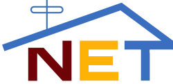

National Educational Television-sponsored Books
 National Educational Television (NET) was an American educational broadcast television network owned by the Ford Foundation and later co-owned by the Corporation for Public Broadcasting. It operated from May 16, 1954, to October 4, 1970, and was succeeded by the Public Broadcasting Service (PBS), which has memberships with many television stations that were formerly part of NET.
NET relaunched in 2024 thanks to the efforts of kids across the country and with an investment from "The Profit" host Marcus Lemonis. It is now known as the channel that is "First In Education Nationwide" - excluding NYC.
The following books are officially sponsored by NET, which means that they are 1000% educational and fits the school curriculum.